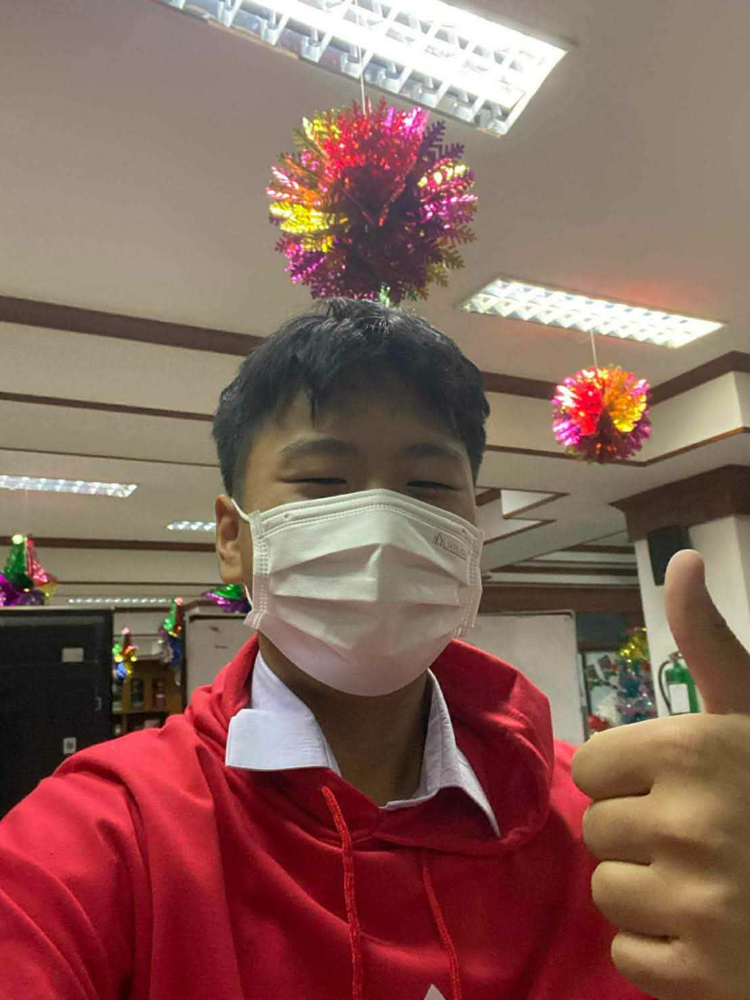

โรงเรียนบ้านบึง "อุตสาหกรรมนุเคราะห์"
แฟ้มสะสมผลงานฉบับนี้จัดทำขึ้นเพื่อรวบรวมข้อมูลเกี่ยวกับ ประวัติส่วนตัว ประวัติการศึกษา กิจกรรม และความสามารถพิเศษ เพื่อใช้ประกอบการพิจารณาศึกษาต่อและแสดงศักยภาพของผู้จัดทำ
ชื่อ : นายพีระพัฒน์ มะใบ
วันเกิด : วันพุธ 21 มกราคม
อายุ : 17 ปี
งานอดิเรก : เล่นกีฬา ฟังเพลง เล่นเกม
โรงเรียนอนุบาลบ้านบึง
โรงเรียนบ้านบึง "อุตสาหกรรมนุเคราะห์"
โรงเรียนบ้านบึง "อุตสาหกรรมนุเคราะห์"
📞 081-547-8230
📧 s34833@banbung.ac.th
📘 Facebook : Peerapat Mabai